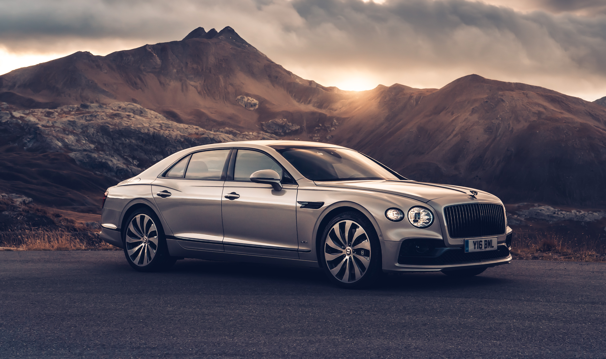
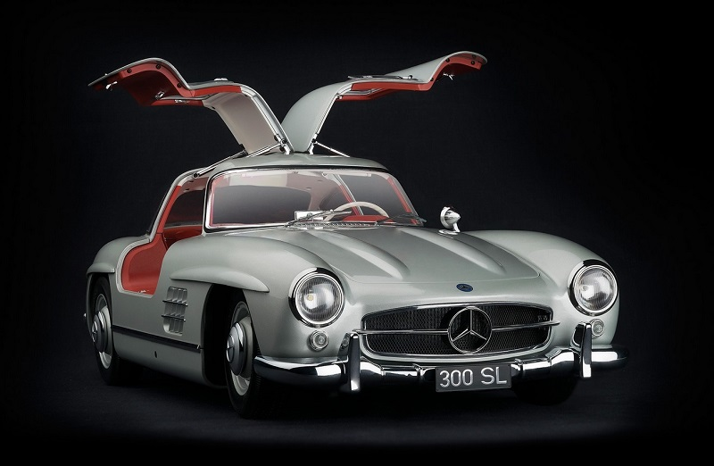
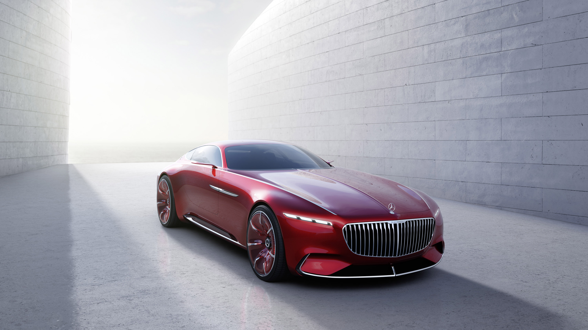

What Makes Sports Cars Special?
Exotic Sports cars stand as masterpieces of modern engineering — uniting innovation, artistry, and high-performance driving. Built for those who crave excitement and elegance, these machines deliver precision, speed, and style in perfect harmony. With powerful engines and aerodynamic designs, they embody the true spirit of automotive excellence.
The Evolution of Sports Cars
Since the early 1900s, sports cars have symbolized progress, passion, and prestige. Legendary models like the Ferrari 250 GTO and Porsche 911 redefined performance and design. Decade after decade, advances in materials, aerodynamics, and engine technology have propelled these icons to new levels of speed, safety, and sophistication.
The Future of Sports Cars
A new era of sports cars is emerging — one that fuses raw power with sustainability. Brands like Tesla, Rimac, and Lamborghini are leading the charge with hybrid and electric innovations. The vision ahead is thrilling: vehicles that achieve breathtaking acceleration and zero emissions, redefining what performance means for the next generation.
